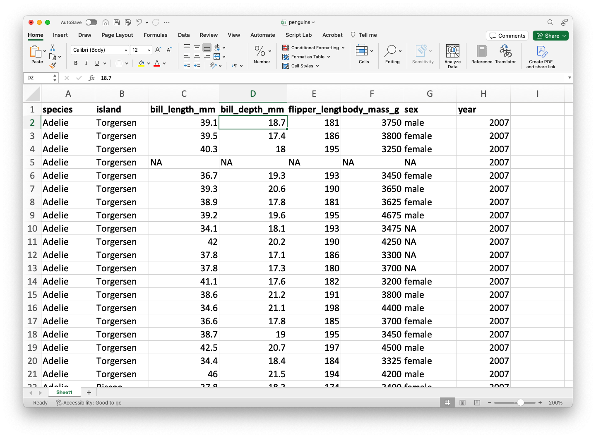
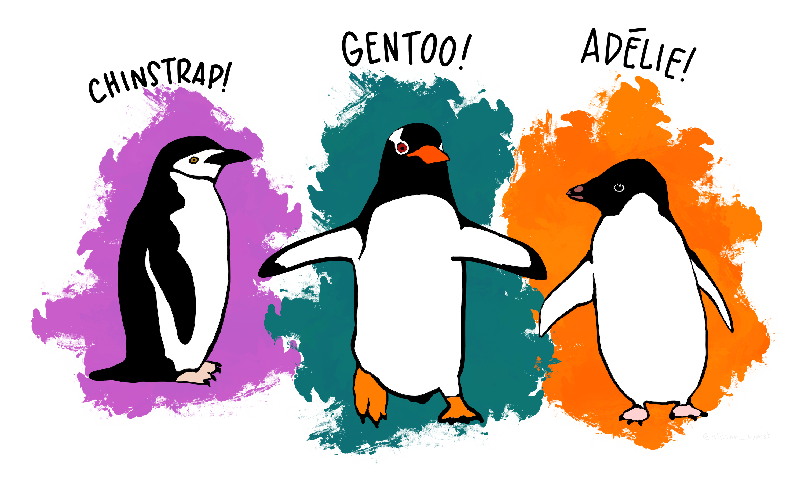
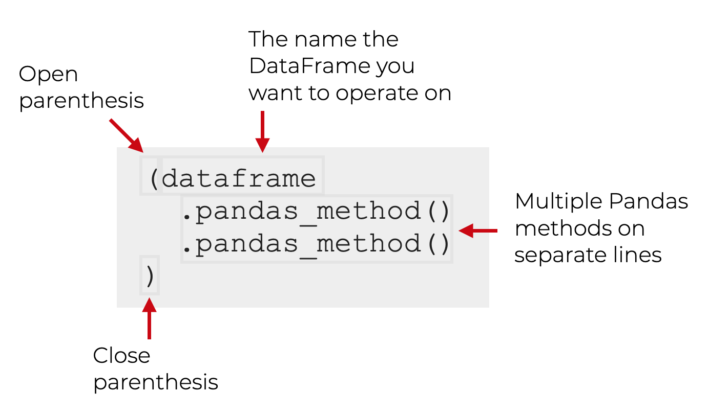
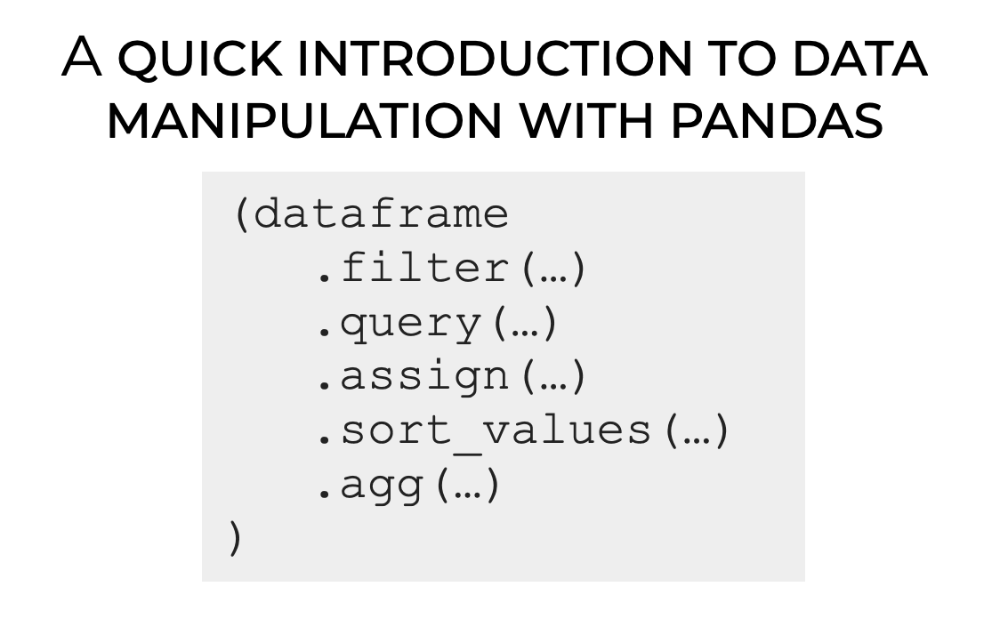
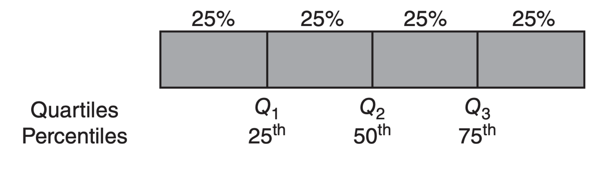
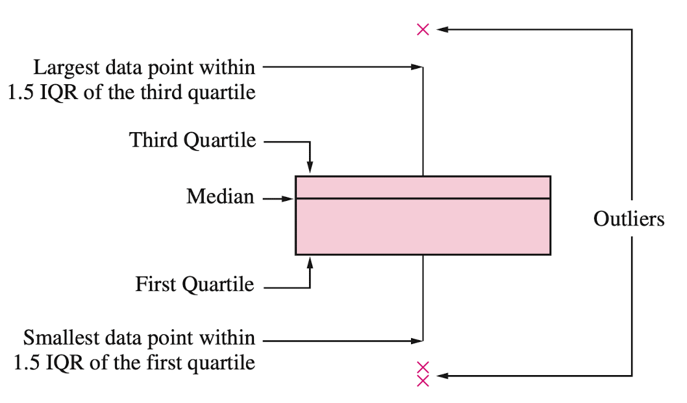
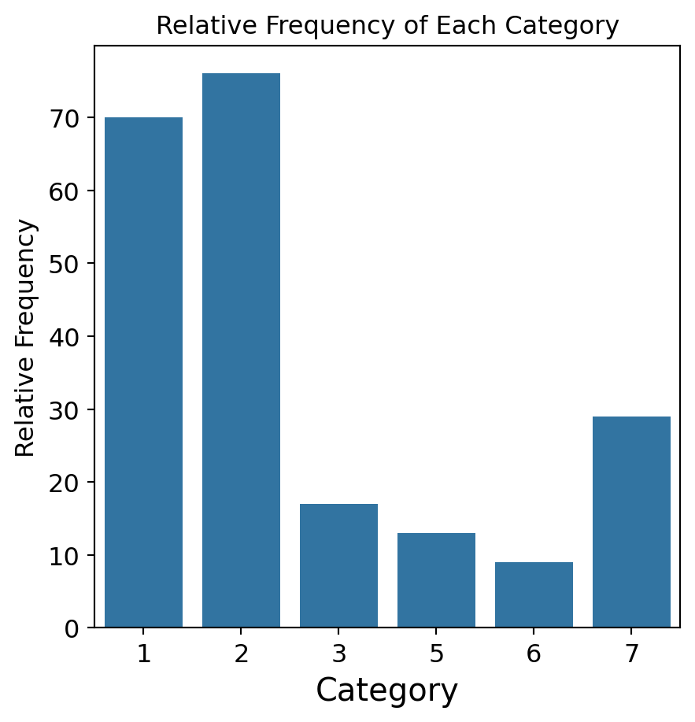
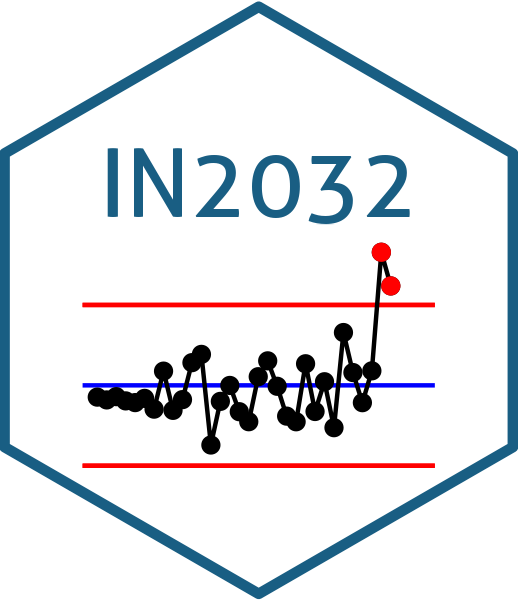

Introducción a Python
IN2032: Análisis Estadístico de Datos
Departmento de Ingeniería Industrial
Agenda
- Introducción a Python
- Lectura de Datos con Python
- Manipulación de Datos con pandas
- Visualización de Datos con matplotlib y seaborn
Introducción a Python
Python
Un lenguaje de programación versátil.
¡Es gratuito!
Se utiliza ampliamente para la limpieza, visualización y modelado de datos.
Se puede ampliar con paquetes (librerías) desarrollados por otros usuarios.

Google Colab
Plataforma gratuita de colaboración en la nube de Google para crear documentos Python.
Ejecuta Python y colabora en cuadernos Jupyter gratis.
Aprovecha la potencia de las GPU gratis para acelerar tus proyectos de ciencia de datos.
Guarda y sube fácilmente tus cuadernos a Google Drive.
Probemos un comando en Python
¿Qué crees que sucederá si ejecutamos este comando?
Hello world!Probemos con otro comando
¿Qué crees que sucederá si ejecutamos este comando?
16Usar Python como calculadora básica
Comentarios
A veces escribimos cosas en la ventana de código que queremos que Python ignore. Estos se llaman comentarios y comienzan con #.
Python ignorará los comentarios y simplemente ejecutará el código.
Funciones en Python
Una de las mejores características de Python es la gran cantidad de comandos integrados que puedes usar. Estos se llaman funciones.
Las funciones tienen dos partes básicas:
La primera parte es el nombre de la función (por ejemplo,
sum).La segunda parte es el valor de entrada para la función, que va dentro de los paréntesis (
sum([1, 5, 15])).
Python es estricto
Python es muy estricto. Por ejemplo, si escribes:
te dará como resultado 101.
Pero si escribes:
--------------------------------------------------------------------------- NameError Traceback (most recent call last) Cell In[11], line 1 ----> 1 Sum([1, 100]) NameError: name 'Sum' is not defined
con la “s” en mayúscula, actuará como si no tuviera ni idea de lo que estamos hablando.
Guarda tu trabajo en objetos
Prácticamente cualquier cosa, incluyendo los resultados de cualquier función de Python, se puede guardar en un objeto.
Esto se logra usando el operador de asignación, que puede ser el símbolo de igual (=).
Puedes inventar cualquier nombre para un objeto de Python. Sin embargo, hay tres reglas básicas:
Debe ser diferente del nombre de una función en Python.
Debe ser lo más específico posible.
No debe contener espacios ni puntos.
Por ejemplo
Tras ejecutar este código, no ocurre nada. Pero si ejecutamos el objeto por separado, podemos ver qué contiene.
También puedes usar print(mi_numero_favorito).
Listas
Hasta ahora hemos usado objetos de Python para almacenar un solo número. Pero en estadística trabajamos con variación, que por definición requiere más de un número.
Un objeto de Python también puede almacenar un conjunto completo de números, llamado lista.
Puedes pensar en una lista como un vector de números (o valores).
El comando [] se puede usar para combinar varios valores individuales en una lista.
Por ejemplo
Este código crea dos vectores
Veamos su contenido
Operaciones
Podemos realizar operaciones sencillas con vectores. Por ejemplo, podemos sumar todos los elementos de una lista.
Indexación
Podemos indexar una posición en el vector usando corchetes con un número como este: [1].
Así, si quisiéramos imprimir el contenido de la primera posición en my_list, podríamos escribir:
Una característica de Python es que el primer elemento de una lista o vector se indexa usando el número 0.
Un poco más sobre objetos en Python
Puedes pensar en los objetos de Python como contenedores que almacenan valores.
Un objeto de Python puede almacenar un solo valor o un grupo de valores (como un vector).
Hasta ahora, solo hemos almacenado números en objetos de Python.
Los objetos de Python pueden contener tres tipos de valores: números, caracteres y booleanos.
Valores de los caracteres
Los caracteres se componen de texto, como palabras u oraciones. Un ejemplo de una lista con caracteres como elementos es:
Es importante saber que los números también pueden tratarse como caracteres, según el contexto.
Por ejemplo, cuando el número 20 se escribe entre comillas ("20"), se tratará como un carácter, aunque esté entre comillas.
Valores booleanos
Los valores booleanos son True o False.
Podríamos tener una pregunta como esta:
- ¿El primer elemento del vector
many_greetingses"hola"?
Operadores lógicos
La mayoría de las preguntas que le pedimos a Python que responda con True o False involucran operadores de comparación como >, <, >=, <= y ==.
El doble signo == comprueba si dos valores son iguales. Incluso existe un operador de comparación para comprobar si los valores no son iguales: !=.
Por ejemplo, 5 != 3 es una proposición True.
Operadores lógicos comunes
>(mayor que)>=(mayor o igual que)<(menor que)<=(menor o igual que)==(igual a)!=(distinto de)
Pregunta
Lee este código y predice su respuesta. Luego, ejecuta el código en Google Colab y comprueba si acertaste.
Cultura de la programación: Ensayo y error
La mejor manera de aprender a programar es experimentando y viendo qué sucede. Escribe código, ejecútalo y analiza por qué no funcionó.
Hay muchas maneras de cometer pequeños errores al programar (por ejemplo, escribir una mayúscula cuando se necesita una minúscula).
A menudo tenemos que encontrar estos errores mediante ensayo y error.
Librerías de Python
Las librerías son las unidades fundamentales del código Python reproducible. Incluyen funciones reutilizables, documentación sobre cómo usarlas y datos de ejemplo.
En este curso, trabajaremos principalmente con las siguientes librerías:
pandaspara manipulación de datosmatplotlibyseabornpara visualización de datosscipyystatsmodelspara el análisis de datos
Lectura de Datos con Python
Carga de datos en Python
En este curso, asumiremos que los datos están almacenados en un archivo de Excel. Como ejemplo, utilizaremos el archivo penguins.xlsx.


El archivo debe haber sido subido previamente a Google Colab.
El conjunto de datos penguins.xlsx contiene información sobre pingüinos que viven en tres islas.

Librería pandas

- pandas es una librería de Python de código abierto para la manipulación y el análisis de datos.
- Está construida sobre numpy para operaciones de datos de alto rendimiento.
- Permite al usuario importar, limpiar, transformar y analizar datos de forma eficiente.
- https://pandas.pydata.org/
Importación de pandas
Afortunadamente, la librería pandas ya viene preinstalada en Google Colab.
Sin embargo, debemos indicarle a Google Colab que queremos usar pandas y sus funciones mediante el siguiente comando:
El comando as pd nos permite asignar un nombre corto a pandas. Para usar una función de pandas, usamos el comando pd.function().
Carga de datos con pandas
El siguiente código muestra cómo leer los datos del archivo “penguins.xlsx” en Python.
La función head()
La función head() permite imprimir las primeras filas de un dataframe de pandas.
| species | island | bill_length_mm | bill_depth_mm | flipper_length_mm | body_mass_g | sex | year | |
|---|---|---|---|---|---|---|---|---|
| 0 | Adelie | Torgersen | 39.1 | 18.7 | 181.0 | 3750.0 | male | 2007 |
| 1 | Adelie | Torgersen | 39.5 | 17.4 | 186.0 | 3800.0 | female | 2007 |
| 2 | Adelie | Torgersen | 40.3 | 18.0 | 195.0 | 3250.0 | female | 2007 |
| 3 | Adelie | Torgersen | NaN | NaN | NaN | NaN | NaN | 2007 |
Tipos de datos
En Python, comprobamos el tipo de cada variable en un conjunto de datos utilizando la función info().
<class 'pandas.core.frame.DataFrame'>
RangeIndex: 344 entries, 0 to 343
Data columns (total 8 columns):
# Column Non-Null Count Dtype
--- ------ -------------- -----
0 species 344 non-null object
1 island 344 non-null object
2 bill_length_mm 342 non-null float64
3 bill_depth_mm 342 non-null float64
4 flipper_length_mm 342 non-null float64
5 body_mass_g 342 non-null float64
6 sex 333 non-null object
7 year 344 non-null int64
dtypes: float64(4), int64(1), object(3)
memory usage: 21.6+ KBFormatos generales de Python
Formato
float64para variables numéricas con decimales.Formato
int64para variables numéricas con enteros.Formato
objectpara variables generales con caracteres.
Definir variables categóricas
Técnicamente, la variable sex en penguins_data es categórica. Para indicárselo explícitamente a Python, usamos el siguiente código.
Al definir la variable sex como categórica, podemos utilizar una visualización eficaz para estos datos.
Hacemos lo mismo con las demás variables categóricas: species e island.
Vamos a comprobar de nuevo el tipo de variables.
<class 'pandas.core.frame.DataFrame'>
RangeIndex: 344 entries, 0 to 343
Data columns (total 8 columns):
# Column Non-Null Count Dtype
--- ------ -------------- -----
0 species 344 non-null category
1 island 344 non-null category
2 bill_length_mm 342 non-null float64
3 bill_depth_mm 342 non-null float64
4 flipper_length_mm 342 non-null float64
5 body_mass_g 342 non-null float64
6 sex 333 non-null category
7 year 344 non-null int64
dtypes: category(3), float64(4), int64(1)
memory usage: 14.9 KBManipulación de Datos con pandas
Encadenamiento de operaciones
Una de las técnicas más importantes de pandas es el encadenamiento (chaining), que permite una manipulación de datos más limpia y legible.
La estructura general del encadenamiento es la siguiente:

Métodos clave de pandas
pandas proporciona métodos o funciones para resolver tareas comunes de manipulación de datos:
.filter()selecciona columnas o filas específicas..query()filtra observaciones según ciertas condiciones..assign()agrega nuevas variables que son funciones de variables existentes..sort_values()cambia el orden de las filas..agg()reduce varios valores a un único resumen numérico.

Para practicar, utilizaremos el conjunto de datos penguins_data.
Seleccionar columnas con .filter()
Seleccione las columnas species, body_mass_g y sex.
El argumento axis le indica a .filter() si debe seleccionar filas (0) o columnas (1) del dataframe.
El comando
.head()nos permite imprimir las primeras seis filas del nuevo dataframe. Debemos eliminarlo para obtener el dataframe completo.
También podemos usar .filter() para seleccionar filas. Para ello, establecemos axis = 1. Podemos seleccionar filas específicas, como la 0 y la 10.
O bien, podemos seleccionar un conjunto de filas usando la función range(). Por ejemplo, seleccionemos las primeras 5 filas.
| species | island | bill_length_mm | bill_depth_mm | flipper_length_mm | body_mass_g | sex | year | |
|---|---|---|---|---|---|---|---|---|
| 0 | Adelie | Torgersen | 39.1 | 18.7 | 181.0 | 3750.0 | male | 2007 |
| 1 | Adelie | Torgersen | 39.5 | 17.4 | 186.0 | 3800.0 | female | 2007 |
| 2 | Adelie | Torgersen | 40.3 | 18.0 | 195.0 | 3250.0 | female | 2007 |
| 3 | Adelie | Torgersen | NaN | NaN | NaN | NaN | NaN | 2007 |
| 4 | Adelie | Torgersen | 36.7 | 19.3 | 193.0 | 3450.0 | female | 2007 |
Filtrado de filas con .query()
Una forma alternativa de seleccionar filas es mediante .query(). A diferencia de .filter(), .query() nos permite filtrar los datos utilizando sentencias o consultas que involucran las variables.
Por ejemplo, filtremos los datos de la especie “Gentoo”.
| species | island | bill_length_mm | bill_depth_mm | flipper_length_mm | body_mass_g | sex | year | |
|---|---|---|---|---|---|---|---|---|
| 152 | Gentoo | Biscoe | 46.1 | 13.2 | 211.0 | 4500.0 | female | 2007 |
| 153 | Gentoo | Biscoe | 50.0 | 16.3 | 230.0 | 5700.0 | male | 2007 |
| 154 | Gentoo | Biscoe | 48.7 | 14.1 | 210.0 | 4450.0 | female | 2007 |
| 155 | Gentoo | Biscoe | 50.0 | 15.2 | 218.0 | 5700.0 | male | 2007 |
| 156 | Gentoo | Biscoe | 47.6 | 14.5 | 215.0 | 5400.0 | male | 2007 |
También podemos filtrar los datos para obtener pingüinos con una masa corporal superior a 5000g.
| species | island | bill_length_mm | bill_depth_mm | flipper_length_mm | body_mass_g | sex | year | |
|---|---|---|---|---|---|---|---|---|
| 153 | Gentoo | Biscoe | 50.0 | 16.3 | 230.0 | 5700.0 | male | 2007 |
| 155 | Gentoo | Biscoe | 50.0 | 15.2 | 218.0 | 5700.0 | male | 2007 |
| 156 | Gentoo | Biscoe | 47.6 | 14.5 | 215.0 | 5400.0 | male | 2007 |
| 159 | Gentoo | Biscoe | 46.7 | 15.3 | 219.0 | 5200.0 | male | 2007 |
| 161 | Gentoo | Biscoe | 46.8 | 15.4 | 215.0 | 5150.0 | male | 2007 |
Incluso podemos combinar .filter() y .query(). Por ejemplo, seleccionemos las columnas species, body_mass_g y sex, y luego filtremos los datos para la especie “Gentoo”.
Crear nuevas columnas con .assign()
Con .assign(), podemos crear nuevas columnas (variables) que son funciones de las existentes. Esta función utiliza una palabra clave especial de Python llamada lambda. Técnicamente, esta palabra clave define una función anónima.
Por ejemplo, creamos una nueva variable LDRatio que es igual a la relación entre bill_length_mm y bill_depth_mm.
En este código, el df después de lambda indica que el dataframe (penguins_data) se denominará df dentro de la función. Los dos puntos : marcan el inicio de la función.
El código agrega la nueva variable al final del dataframe resultante.
Podemos ver la nueva variable usando .filter().
Ordenación con .sort_values()
Podemos ordenar los datos según una columna como bill_length_mm.
| species | island | bill_length_mm | bill_depth_mm | flipper_length_mm | body_mass_g | sex | year | |
|---|---|---|---|---|---|---|---|---|
| 142 | Adelie | Dream | 32.1 | 15.5 | 188.0 | 3050.0 | female | 2009 |
| 98 | Adelie | Dream | 33.1 | 16.1 | 178.0 | 2900.0 | female | 2008 |
| 70 | Adelie | Torgersen | 33.5 | 19.0 | 190.0 | 3600.0 | female | 2008 |
| 92 | Adelie | Dream | 34.0 | 17.1 | 185.0 | 3400.0 | female | 2008 |
Para ordenar en orden descendente, utilice ascending=False dentro de sort_values().
| species | island | bill_length_mm | bill_depth_mm | flipper_length_mm | body_mass_g | sex | year | |
|---|---|---|---|---|---|---|---|---|
| 185 | Gentoo | Biscoe | 59.6 | 17.0 | 230.0 | 6050.0 | male | 2007 |
| 293 | Chinstrap | Dream | 58.0 | 17.8 | 181.0 | 3700.0 | female | 2007 |
| 253 | Gentoo | Biscoe | 55.9 | 17.0 | 228.0 | 5600.0 | male | 2009 |
| 339 | Chinstrap | Dream | 55.8 | 19.8 | 207.0 | 4000.0 | male | 2009 |
| 267 | Gentoo | Biscoe | 55.1 | 16.0 | 230.0 | 5850.0 | male | 2009 |
Resumen con .agg()
Podemos calcular resúmenes estadísticos de body_mass_g.
| body_mass_g | |
|---|---|
| mean | 4201.754386 |
| var | 643131.077327 |
| std | 801.954536 |
Por defecto,
agg()ignora los valores faltantes.
Podemos calcular resúmenes estadísticos de varias columnas al mismo tiempo.
Guarda los resultados en un objeto
Tras realizar operaciones con nuestros datos, podemos guardar el resultado como un nuevo objeto.
| bill_length_mm | bill_depth_mm | body_mass_g | |
|---|---|---|---|
| mean | 43.921930 | 17.151170 | 4201.754386 |
| var | 29.807054 | 3.899808 | 643131.077327 |
| std | 5.459584 | 1.974793 | 801.954536 |
Más sobre pandas

Visualización de Datos con matplotlib y seaborn
Ejemplo
Un criminólogo está desarrollando un sistema basado en reglas para clasificar los tipos de vidrio encontrados en investigaciones criminales.
Los datos consisten en 214 muestras de vidrio etiquetadas en una de siete categorías.
Hay nueve predictores, incluyendo el índice de refracción y los porcentajes de ocho elementos: Na, Mg, Al, Is, K, Ca, Ba y Fe. La respuesta es el tipo de vidrio.
El conjunto de datos se encuentra en el archivo “glass.xlsx”. Vamos a cargarlo usando pandas.
La variable Type es categórica. Por lo tanto, asegurémonos de que Python lo sepa usando el siguiente código.
Librería matplotlib
matplotlib es una librería completa para crear visualizaciones estáticas, animadas e interactivas.
Es ampliamente utilizada en la comunidad de ciencia de datos para graficar datos en diversos formatos.
Ideal para crear visualizaciones sencillas como gráficos de líneas, gráficos de barras, diagramas de dispersión y más.

Librería seaborn
- seaborn es una librería de Python basada en Matplotlib.
- Diseñada para facilitar y embellecer la visualización de datos estadísticos.
- Ideal para crear visualizaciones informativas y atractivas con un mínimo de código.
- https://seaborn.pydata.org/index.html
Importación de las librerías
Las librerías matplotlib y seaborn vienen preinstaladas en Google Colab. Sin embargo, debemos indicarle a Google Colab que queremos usarlas, junto con sus funciones, mediante el siguiente comando:
Al igual que con pandas, el comando as sns nos permite usar un nombre corto para seaborn. De forma similar, renombramos matplotlib como plt.
Histograma
Representación gráfica que muestra la distribución de la muestra, indicando las regiones donde se concentran los puntos y las regiones donde son menos numerosos.
Las barras del histograma se tocan. Un espacio indica que no hay observaciones en ese intervalo.
Histograma de Na
Para crear un histograma, utilizamos la función histplot() de seabron.
Gráfica de caja
Muestra la mediana, el primer y tercer cuartil, y cualquier valor “atípico” presente en la muestra.
La mediana muestral es el valor central de los datos ordenados.
Los cuartiles de muestra dividen los datos en cuartiles lo más aproximado posible:
El primer cuartil (\(Q_1\)) es la mediana de la mitad inferior de los datos.
El segundo cuartil (\(Q_2\)) es la mediana o valor central de los datos.
El tercer cuartil (\(Q_3\)) es la mediana de la mitad superior de los datos.

En Python, los cuartiles se calculan utilizando la función quantile().
Anatomía de una gráfica de cajas
El rango intercuartil (RIC) es la diferencia entre el tercer cuartil y el primer cuartil (\(Q_3 - Q_1\)). Esta es la distancia necesaria para abarcar la mitad central de los datos.

Gráfica de caja de Na
Para crear una gráfica de caja, utilizamos la función boxplot() de seabron.
Valores atípicos
Los valores atípicos son puntos que son mucho mayores o menores que el resto de los puntos de la muestra.
Pueden deberse a errores de introducción de datos o a que realmente son diferentes del resto.
No se deben eliminar los valores atípicos sin una cuidadosa consideración; a veces, los cálculos y análisis se realizan con y sin valores atípicos, y luego se comparan.
Gráfica de barras
Describe datos categóricos clasificados en diversas categorías según el sector, la región, diferentes periodos de tiempo u otros factores similares.
Los diferentes sectores, regiones o periodos de tiempo se etiquetan como categorías específicas.
Un gráfico de barras se construye creando categorías que se representan mediante etiquetas y que se representan mediante intervalos de igual longitud en un eje horizontal.
La frecuencia o el recuento dentro de la categoría correspondiente se representa mediante una barra cuya altura es proporcional a la frecuencia.
Creamos el gráfico de barras utilizando la función countplot() de seaborn.
Guardar gráficos
Guardamos una figura usando la función .save.fig() de matplotlib. El argumento dpi de esta función establece la resolución de la imagen. Cuanto mayor sea el valor de dpi, mejor será la resolución.
Mejorando la figura
También podemos usar otras funciones para mejorar el aspecto de la figura:
plt.title(fontsize): Tamaño de fuente del título.plt.ylabel(fontsize): Tamaño de fuente del título del eje Y.plt.xlabel(fontsize): Tamaño de fuente del título del eje X.plt.yticks(fontsize): Tamaño de fuente de las etiquetas del eje Y.plt.xticks(fontsize): Tamaño de fuente de las etiquetas del eje X.
plt.figure(figsize=(5, 5))
sns.countplot(data = glass_data, x = 'Type')
plt.title('Relative Frequency of Each Category', fontsize = 12)
plt.ylabel('Relative Frequency', fontsize = 12)
plt.xlabel('Category', fontsize = 15)
plt.xticks(fontsize = 12)
plt.yticks(fontsize = 12)
plt.savefig('bar_chart.png',dpi=300)
Return to main page

Tecnológico de Monterrey